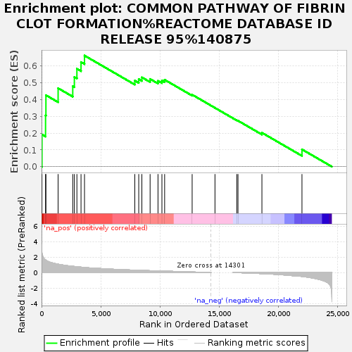
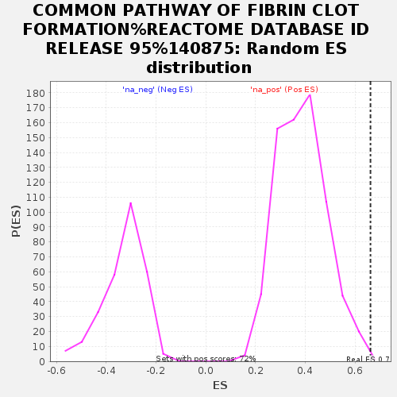

| Dataset | GvHD_A2_Ranks |
| Phenotype | NoPhenotypeAvailable |
| Upregulated in class | na_pos |
| GeneSet | COMMON PATHWAY OF FIBRIN CLOT FORMATION%REACTOME DATABASE ID RELEASE 95%140875 |
| Enrichment Score (ES) | 0.6625261 |
| Normalized Enrichment Score (NES) | 1.7154218 |
| Nominal p-value | 0.0013927576 |
| FDR q-value | 1.0 |
| FWER p-Value | 0.999 |

| SYMBOL | RANK IN GENE LIST | RANK METRIC SCORE | RUNNING ES | CORE ENRICHMENT | |
|---|---|---|---|---|---|
| 1 | SERPIND1 | 38 | 2.517 | 0.1918 | Yes |
| 2 | CD177 | 339 | 1.635 | 0.3052 | Yes |
| 3 | F5 | 370 | 1.593 | 0.4263 | Yes |
| 4 | F13B | 1399 | 1.087 | 0.4678 | Yes |
| 5 | F2R | 2633 | 0.807 | 0.4795 | Yes |
| 6 | PF4 | 2770 | 0.791 | 0.5347 | Yes |
| 7 | SERPINE2 | 2983 | 0.753 | 0.5839 | Yes |
| 8 | FGA | 3331 | 0.703 | 0.6237 | Yes |
| 9 | PRTN3 | 3625 | 0.662 | 0.6625 | Yes |
| 10 | THBD | 7868 | 0.311 | 0.5130 | No |
| 11 | F8 | 8200 | 0.293 | 0.5220 | No |
| 12 | PROCR | 8464 | 0.279 | 0.5327 | No |
| 13 | F10 | 9159 | 0.241 | 0.5229 | No |
| 14 | SERPINC1 | 9825 | 0.212 | 0.5120 | No |
| 15 | PF4V1 | 10156 | 0.196 | 0.5135 | No |
| 16 | PROC | 10384 | 0.182 | 0.5182 | No |
| 17 | FGG | 12706 | 0.076 | 0.4292 | No |
| 18 | F2 | 14631 | 0.000 | 0.3506 | No |
| 19 | SERPINA5 | 16472 | -0.016 | 0.2766 | No |
| 20 | F13A1 | 16574 | -0.020 | 0.2740 | No |
| 21 | PROS1 | 18591 | -0.140 | 0.2024 | No |
| 22 | FGB | 21970 | -0.504 | 0.1030 | No |
